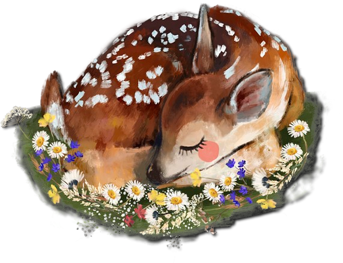
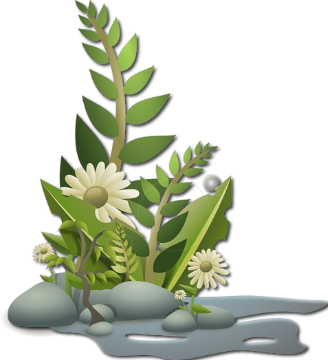

Mengenal Hewan dan Tumbuhan
Hewan adalah organisme multiseluler eukariotik[1] yang tidak mampu membuat makanannya sendiri (heterotrof[2])., sedangkan Tumbuhan adalah organisme multiseluler eukariotik yang mampu membuat makanannya sendiri melalui proses fotosintesis.
Roadmap Kehidupan Hewan dan tumbuhan
Hewan
- Hewan adalah Organisme multiseluler eukariotik yang tidak mampu membuat makanannya sendiri (heterotrof).
Cara Makan :
- Hewan : makhluk heterotrof, artinya mereka mendapatkan makanan dari organisme lain. Hewan dapat memakan tumbuhan, hewan lain, atau bahan organik lainnya.

Pergerakan :
- Hewan : Kebanyakan hewan mampu bergerak bebas, kecuali beberapa jenis yang menempel pada suatu tempat. Hewan memiliki berbagai cara untuk bergerak, seperti:
- Berjalan.
- Berlari.
- Berenang.
- Terbang.
- Melompat.
Pertumbuhan dan Perkembangan :
- Hewan : Hewan tumbuh dan berkembang dengan cara membesar dan berubah bentuk. Hewan memiliki organ dan sistem organ yang kompleks untuk menjalankan berbagai fungsi tubuh.
Reproduksi :
- Hewan : Hewan bereproduksi secara seksual maupun aseksual. Reproduksi seksual melibatkan perkawinan antara jantan dan betina untuk menghasilkan keturunan. Reproduksi aseksual terjadi tanpa perkawinan, seperti pada beberapa jenis cacing dan bintang laut.
Tumbuhan
- Tumbuhan adalah Organisme multiseluler eukariotik yang mampu membuat makanannya sendiri melalui proses fotosintesis.
Cara Makan :
- Tumbuhan : makhluk autotrof, artinya mereka dapat membuat makanannya sendiri melalui fotosintesis. Fotosintesis adalah proses yang menggunakan energi cahaya matahari, air, dan karbon dioksida untuk menghasilkan glukosa (gula) dan oksigen.

Pergerakan :
- Tumbuhan : Tumbuhan pada umumnya tidak dapat bergerak bebas. Ada beberapa jenis tumbuhan yang menunjukkan gerakan, seperti saat mengikuti arah matahari, namun gerakan ini sangat terbatas.
Pertumbuhan dan Perkembangan :
- Tumbuhan : Tumbuhan tumbuh dan berkembang dengan cara menambah jumlah daun, batang, dan akar. Tumbuhan memiliki jaringan dan organ yang berbeda untuk fotosintesis, pengangkutan air dan mineral, serta reproduksi.
Reproduksi :
- Tumbuhan : Tumbuhan bereproduksi secara seksual maupun aseksual. Reproduksi seksual pada tumbuhan melibatkan penyerbukan dan pembuahan untuk menghasilkan biji. Reproduksi aseksual pada tumbuhan dapat terjadi melalui stek, tunas, dan spora.